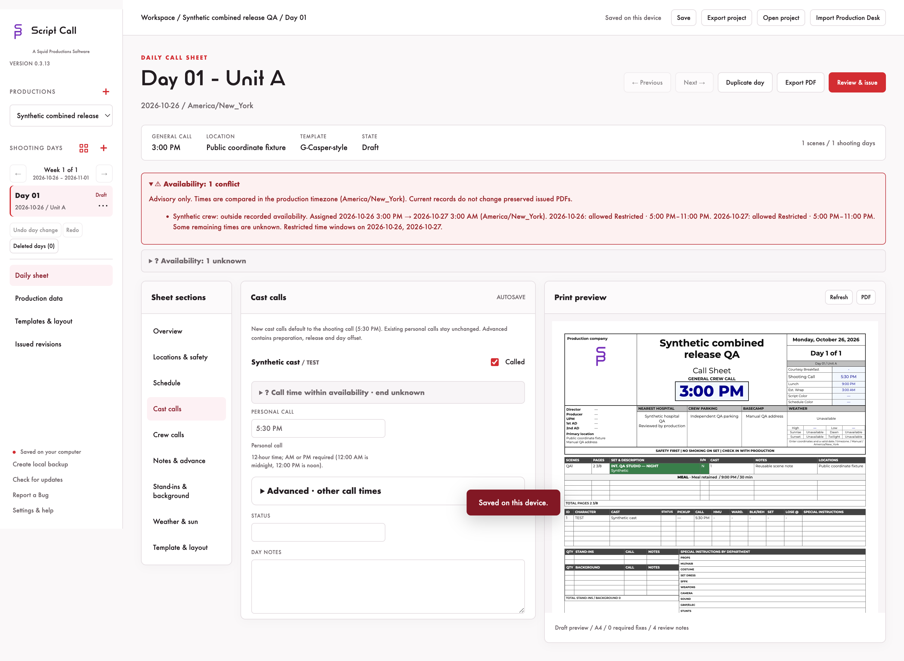
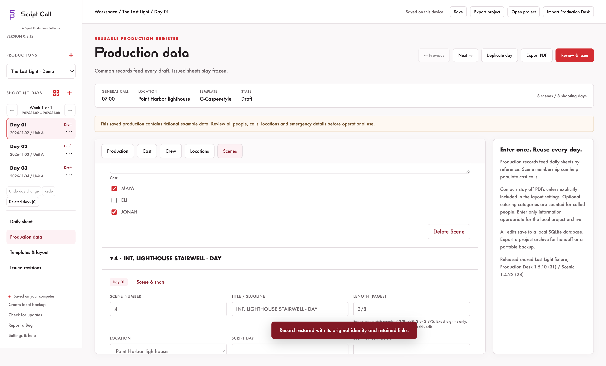
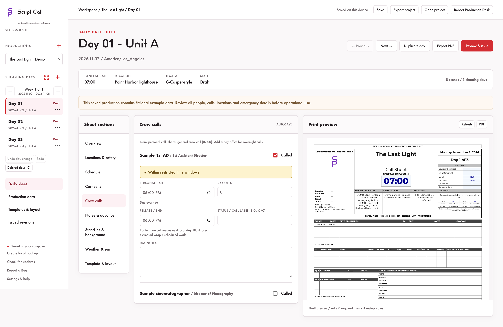
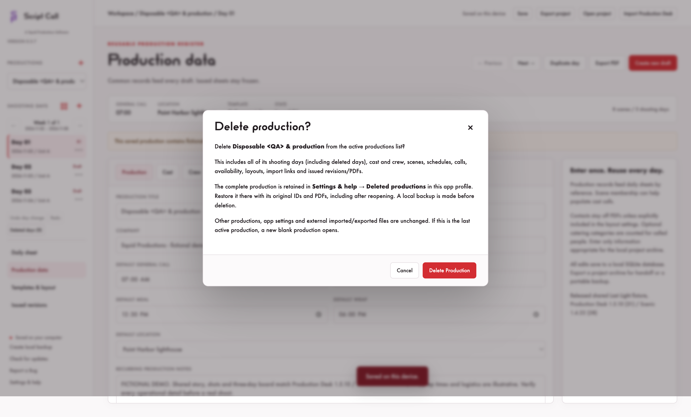

Local call sheet software made by some friends at Squid Productions to bring the plan to the crew.
Build your shooting day, keep cast and crew calls together, and hand off a readable PDF. Saved on your computer.
Scene notes and clear call advice.
Daily scene schedule rows now edit notes instead of start times and durations. Notes can follow production scene notes or be a separate daily override, including blank or multiline notes. New call-sheet output keeps page lengths and order while omitting scene timing filler. Historic timing records and issued PDFs remain preserved.
Personal Call stays visible; preparation, release and day offset are under Advanced. New cast calls default to Shooting Call and new crew calls to General crew call. Existing personal times stay unchanged; a missing base stays unset. A valid cast call no longer inherits production wrap as a personal release. Unknown end-time advice is neutral and separate from red real conflicts, which show allowed hours and still let you save and continue.
Choose 24-hour or AM/PM display.
Settings & help offers military 24-hour and civilian 12-hour display. The preference travels with the production and becomes the default for new productions on this device. Stored times and zones do not change. AM/PM is explicit in editable 12-hour fields; incomplete input keeps the last valid saved time. Issued PDFs keep their original format.
Maps coordinates for shoot-day weather.
Explicit place or coordinate-pin data from a shooting-location Google Maps link can fill latitude and longitude for solar and online NWS weather. Manual coordinates and addresses are protected; replacement is explicit, and stale lookup results are discarded. Camera viewport positions are not treated as venues. Supported short links use bounded HTTPS Google Maps lookups; opaque IDs, viewport-only links, unsupported redirects and offline failures may need manual entry. Real short-link resolution is not yet live validated. Coordinates are suggestions to confirm, not verified venue geocoding. Parking remains independent.
NWS covers supported US locations for about seven days. Forecasts use the selected shoot date and effective timezone; missing/out-of-range, failed and stale forecasts are explicit. No paid API or new credentials.

The day before the shoot.
- Keep production records, shooting days, locations, schedules, and cast and crew calls together.
- Choose a G-Casper-style front with a separate three-column crew back, or the Original Narrative layout.
- Customize templates, section order, A4 or US Letter paper, clock format, and color or ink-saving output.
- Preview and export PDFs, review required details, and keep issued revisions with their original PDF bytes.
- Import a Production Desk project, review mappings, and compare later changes while preserving your manual edits and issued days.
- Save local backups and export portable
.callsheetprojects.
Plan around cast and crew availability.
In Production Data, open Cast availability or Crew availability beside Add. Record unavailable dates, all-day availability or multiple time windows, including overnight windows. A scrollable spreadsheet and date navigation keep the full production span manageable.
Call sheets show a red text/icon advisory when a person’s full assigned interval conflicts with recorded availability. Unknown information stays distinct from a confirmed conflict. Your call times stay under your control.

Scene titles first. Details when you need them.
Scene cards collapse to their number and title, with Collapse all, Expand all and remembered local open state. Delete Scene confirms its name and schedule scope, makes a backup and retains the full record in Deleted scenes. Restore it beside Add scene or in Settings & help. Linked schedule IDs/times, script, shots, cast, location and length stay stored. Personal calls remain independent; review them explicitly. Issued PDFs stay unchanged.
Type page fractions directly.
Length (pages) accepts 2 3/8, 3/8, whole pages and exact decimals. Values remain exact eighths; unsupported/incomplete input is kept visible instead of rounded or saved over your last valid length. Tab/Enter commits and Escape cancels. Deleted scenes leave draft/advance schedules, page totals and availability checks; other times are not shifted.

Remove a record and keep a way back.
Delete Cast, Delete Crew and Delete Location confirm the named record and move it to Deleted records. Restore it beside the list or in Settings & help, including after reopening or sharing a portable project. Original IDs, calls, scene links, availability and issued PDFs remain stored; a backup is made first.
See location titles, expand what you need.
Location cards collapse individually, with Collapse all and Expand all. Their open state is remembered on this device. Location timezone inputs are hidden while saved zones remain unchanged. A deleted location still used by a day or scene must be restored or explicitly replaced before issuing another sheet.
Restricted time is yellow.
Cast and crew time windows now use yellow and explicit Restricted labels, including overnight carry-in. Full day stays green; On Call stays distinct and available, not on set. Red conflict warnings and unknown availability keep their meanings.

Separate map details for your shoot and base camp.
Production Data → Locations puts a Google Maps link first for both shooting and parking / base camp. Keep editable manual addresses, review explicit link-text suggestions, and open Maps for more information. Coordinates remain under collapsed Advanced. Short or opaque links still need manual address review; reliable place/pin coordinates may resolve separately. No paid API is used.
O/C — On Call, available but not on set.
Crew availability now offers a distinct On Call state for each marked date. It keeps calls and attendance unchanged, and survives saving, sharing and reimporting. Overnight work still checks each date; unentered dates remain unknown.
Choose a crew department, or type your own.
In Production Data → Crew, Department now has a native dropdown with 17 production presets. Type to filter and choose with the keyboard or mouse. Custom names and existing values remain editable, and normal Tab navigation stays available. Escape dismisses suggestions without choosing the highlighted option; typed text follows normal autosave. Department strings and person IDs survive save/reopen and portable project copies.
The next day starts on the next date.
Add Day now defaults to the calendar date after the final active day in production sequence. If Day 2 is October 22, adding Day 3 proposes October 23. Selecting an older day or another shoot week does not reset that default. You can edit the proposed date; Duplicate Day keeps the selected source date. Month/year boundaries, leap days and daylight-saving transitions are handled without changing existing days.
Recoverably remove a production.
In Settings & Help, Delete Production confirms the selected production name and explains exactly what moves to Deleted productions. Restore it there, including after reopening, with its original records, IDs and issued PDFs. A backup is made first; unrelated productions, preferences and external files stay unchanged.

Start with your production.
Fresh installations and new productions start blank. The bundled Last Light and legacy Quiet Hours demo scripts and load buttons have been removed. Existing saved or imported projects remain intact, and G-Casper and Original Narrative templates remain available.
Keep the production on your device.
Work with local project files and keep an independent backup. Sharing a PDF or project is your choice. Read the quick start for templates, importing, and issuing your first sheet.
Explore Production Desk · Explore Scenic · Explore Shot Reporter